Префектура Гумма · деревня Уэно · ремёсла
Деревня Уэно: как лес в горах Гуммы становится чашами, игрушками и стульями
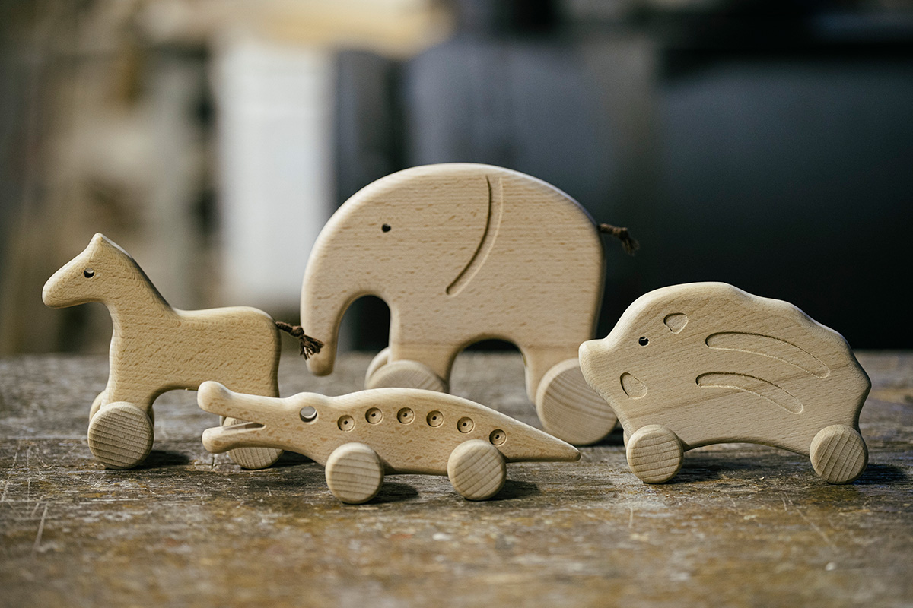
Больше девяти десятых деревни Уэно занимает лес, и полей здесь почти нет. Зато есть дерево, а с ним кооператив, который сам рубит, пилит и делает мебель, и два десятка мастеров, которые точат чаши и собирают игрушки.
Лес
Дерево, которое идёт в дело целиком
Деревня Уэно лежит в самом юго-западном углу префектуры Гумма. Горы здесь глубокие, склоны крутые, широколиственные деревья раскидывают кроны над долинами, а горы поит река Канна, вода которой включена в японский список ста лучших вод страны. Распахать поле на таких склонах почти невозможно, поэтому лес испокон веков кормил людей. За ним и в наши дни ухаживают, растят деревья, рубят их и перерабатывают так, чтобы ничего не пропало.
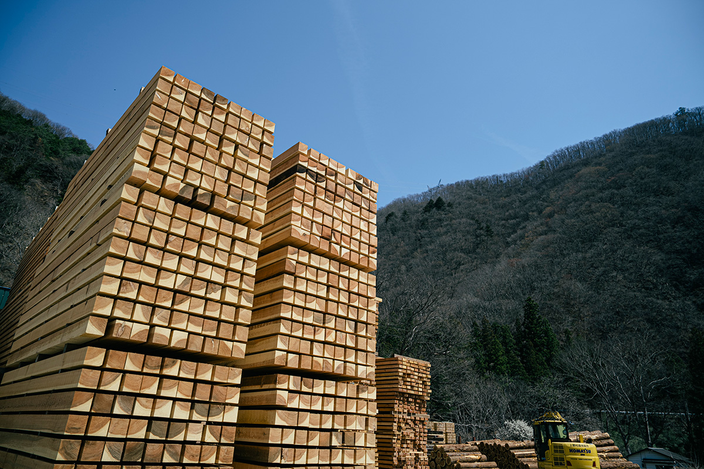
Лесной кооператив появился в деревне в 1964 году. Он занимается всем сразу: уходом за лесом, рубкой, распиловкой, а ещё делает и продаёт изделия из дерева. По словам начальника деревообрабатывающего отдела, кооператив когда-то создали сами местные владельцы лесных участков.
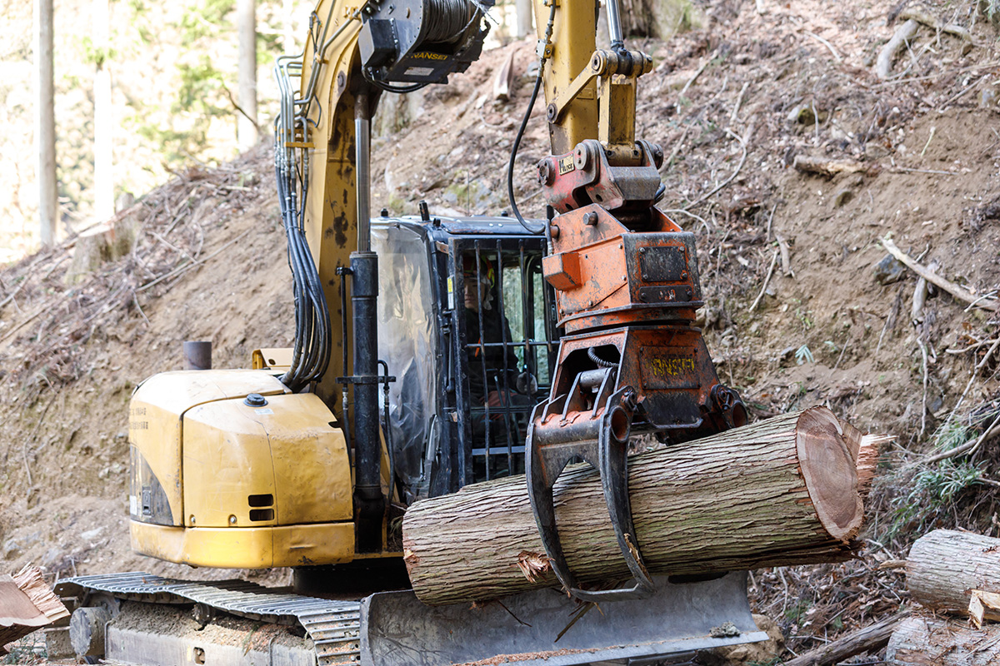
Брёвна с гор везут на двор кооператива, а дальше каждое находит своё применение. На стройматериалы идёт в основном криптомерия возрастом 30–50 лет. Широколиственные породы и кривые стволы превращают в лакированную посуду и мебель. Кипарис хиноки и лиственницу отправляют на рынок кругляка. Кору, снятую с брёвен, сжигают в котле на биомассе, и его тепло сушит древесину. Обрезки дробят в щепу для бумажной фабрики или пускают на топливные пеллеты, а опилки забирает местная ферма, где разводят инобута, помесь кабана и свиньи: для подстилки в свинарнике лучше не придумаешь. Срубленные стволы сохнут прямо на территории кооператива и ждут своей очереди стать вещью.
Чаши
Масатака Имаи: точёная посуда из дзельквы
Уэно ещё и деревня ремесла: из примерно тысячи жителей деревом занимаются около двадцати человек. Первым среди них был Масатака Имаи, основатель мастерской «Имаи хикимоно когэйся».
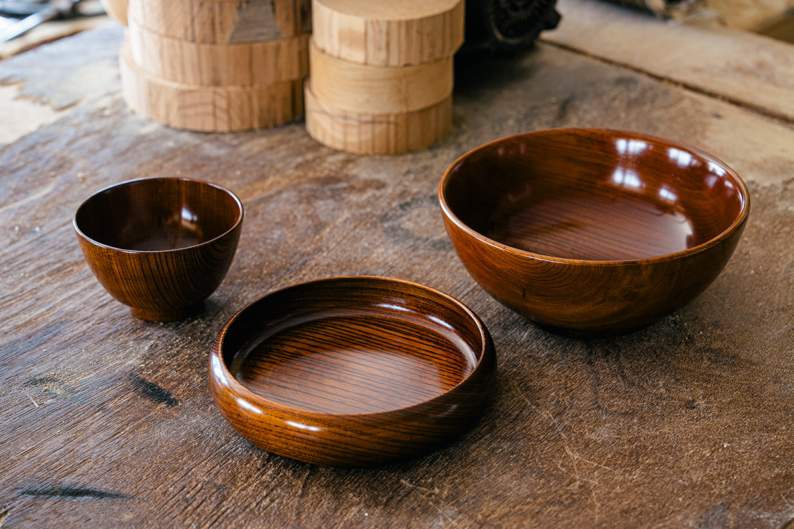
«Деревообработка в Уэно начиналась с чаш»
Масатака Имаи
Когда-то деревня жила конняку, шелководством и выжигом угля. Но в 1955–1964 годах жизнь в Японии изменилась, и по-старому прожить стало нельзя. Тогдашний глава деревни решил сделать новым местным промыслом работу по дереву и отправил молодого сотрудника деревенской управы на два года учиться в мастерскую в Одаваре, в префектуре Канагава. Этим сотрудником был Масатака Имаи. Чем глубже он уходил в ремесло, тем больше оно его затягивало, и со временем он ушёл из управы и открыл собственную мастерскую.
«Пятьдесят лет этим занимаюсь, а всё ещё не до конца понимаю. Не продашь, есть будет нечего, так что и во сне, и наяву думаю только о работе»
Масатака Имаи
Имаи работает с дзельквой. Он покупает брёвна возрастом больше ста лет, грубо обтачивает заготовки и сушит их около года. Древесина розовеет, словно разрумянившись, и годичные кольца проступают отчётливо.
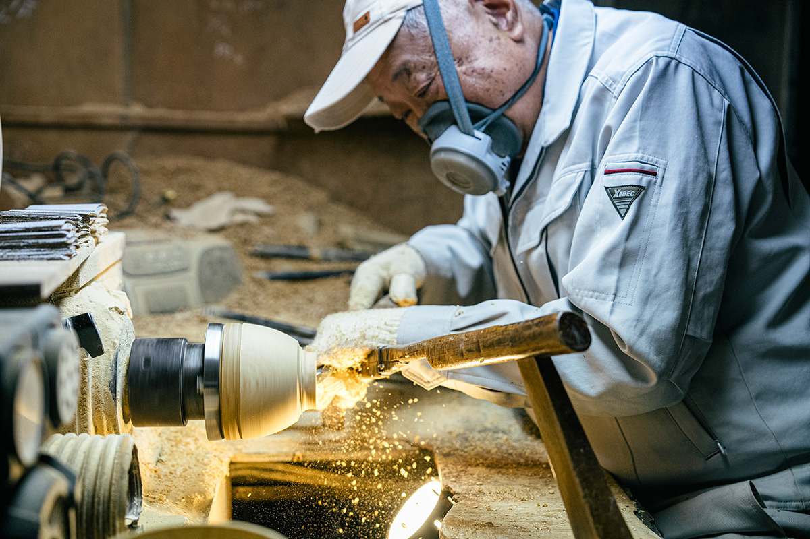
«У дзельквы красивый рисунок. Но дерево твёрдое, и без умения с ним не справиться»
Масатака Имаи
Хорошо высушенную заготовку грубо обрезают и точат на станке, и бесформенный кусок дерева на глазах становится посудой. Потом её долго шлифуют, чтобы край был мягким для губ. Последний слой, лак, который втирают тканью, наносит старшая сестра мастера.
«Молодые люди сначала покупают одну чашу для себя. Попользуются, понравится, и потом докупают на всю семью. Вот тогда радуюсь»
Масатака Имаи
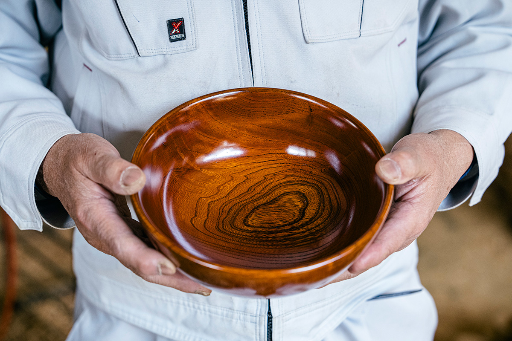
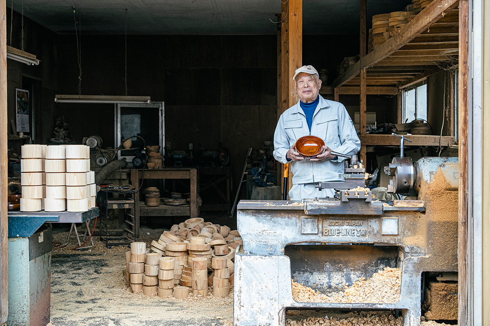
Масатака Имаи родился в Уэно в 1955 году и в 1975 году пришёл на работу в деревенскую управу. Ремеслу он учился в Одаваре, а затем в префектуре Исикава осваивал заготовку для лакированной посуды Яманака. В 1987 году он открыл свою мастерскую. Имаи носит звание мастера традиционных ремёсел префектуры Гумма и точит чаши и другую посуду из японской дзельквы.
«Имаи хикимоно когэйся»
- Сайт
- imai-kougei.site
Игрушки
«Кимама кобо»: стулья, которые переходят от родителей к детям
Игрушки и мебель для детей в виде зверей делают в мастерской «Кимама кобо» Сюдзи Оно и его жена. Здесь делают кубики-зверушки, пазлы и игрушки, которые можно катать по полу. Мастер уверен, что у каждой породы дерева есть свои достоинства, поэтому и обрезки разных деревьев не выбрасывает, а превращает в подставки для карандашей и брелоки.
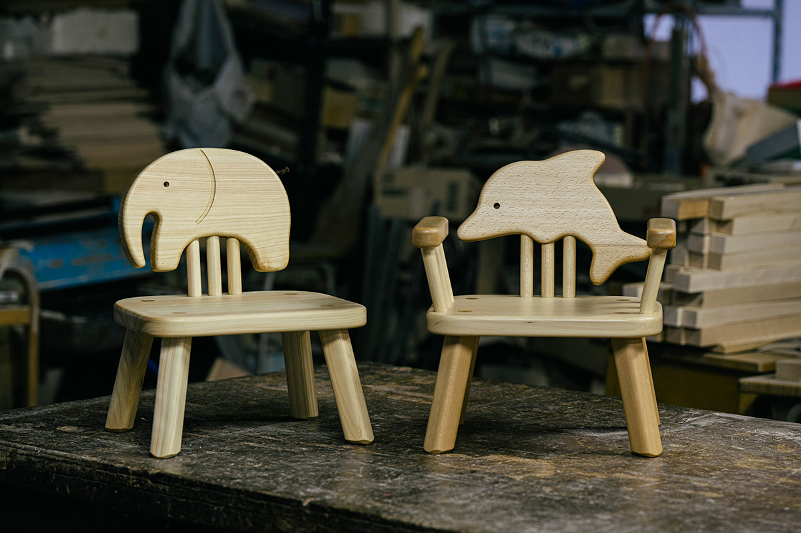
Сюдзи Оно родился в 1960 году на Хоккайдо, в молодости жил в Тибе и Токио и в 29 лет, в 1989 году, переехал в Уэно. Он устроился в деревообрабатывающий центр лесного кооператива, а в 1992 году открыл свою мастерскую.
«Мне хотелось жить на природе, я объехал всю страну и попал в эту деревню. Когда я впервые пошёл по здешним горам, меня поразило, как красиво распускаются почки. Столько разных широколиственных деревьев бывает только там, где природа по-настоящему богата. А ещё люди здесь добрые. Уезжать не хотелось, и я решил заняться тем, что можно делать именно здесь»
Сюдзи Оно
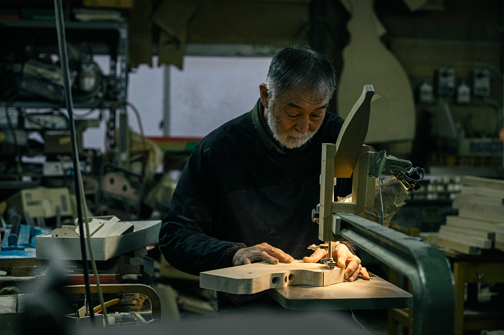
Самая любимая покупателями вещь мастерской это детский стул со спинкой-зверем. Первый такой стул Оно сделал для собственного ребёнка. Стулья собирают из твёрдого бука, поэтому они служат долго, и некоторые уже перешли от родителей к детям. В 2003 году много писали о столике и стуле с овечкой, которыми пользовалась принцесса Айко.
«Когда ребёнок подрастает, мы можем срезать подлокотники, и получается обычный стул. Его ставят вместо столика или на кухне вместо табуретки. Радостно, когда вещью пользуются так долго»
Сюдзи Оно
Каждый раз, когда кожей чувствуешь смену времён года, понимаешь, что и сегодня жив, говорит Оно. Из этой жизни рядом с природой и появляются вещи, которые любят многие.
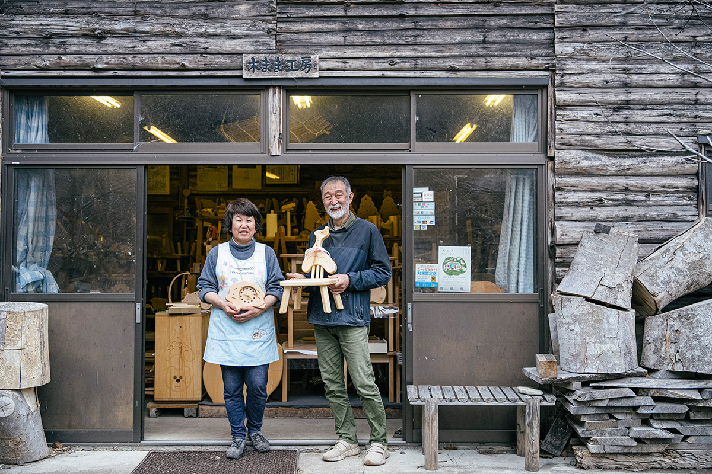
«Кимама кобо»
- Адрес
- префектура Гумма, уезд Тано, деревня Уэно, Нииба, 1365-1
- Телефон
- +81 274-59-2964
- Сайт
- e-kimama.com
Кооператив
От рубки до готовой вещи
Лесной кооператив деревни Уэно делает самые разные вещи: от комодов и столов до чаш и столовых приборов. В кооперативе около 40 человек, из них в 2025 году было примерно семь мастеров по дереву. Техники тоже разные: лазерная резка, токарная работа, столярное соединение без гвоздей.
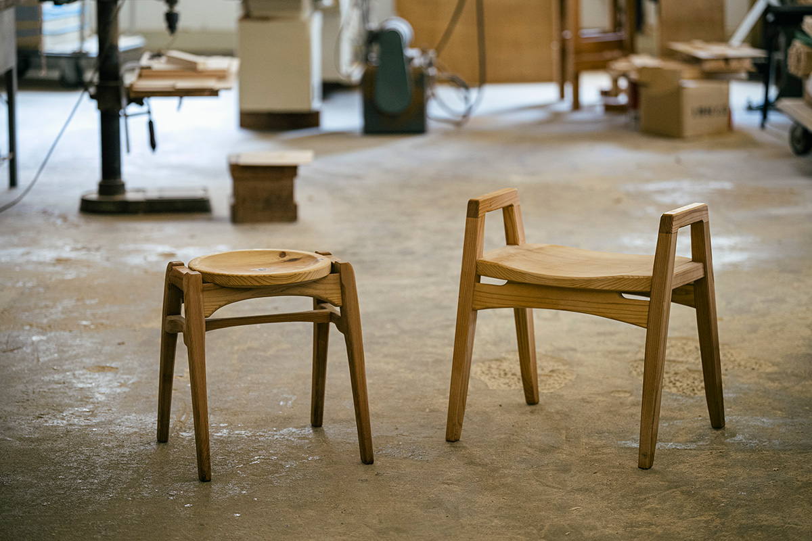
Вокруг одни горы. Брёвна, только что спущенные с гор, пахнут лесом. В штабелях на дворе каждое бревно своё: рисунок и цвет зависят от того, где дерево росло. Мастера видят это каждый день и работают с этим.
Котаро Хорикава родом из префектуры Фукуока. После профессионального училища он пришёл в кооператив и около двадцати лет работает с деревом, отвечая и за мастерскую, и за распиловку.
«Стараюсь делать вещи, которыми удобно пользоваться и которые честно служат своему делу»
Котаро Хорикава
Лучше всего этот подход видно в штабелируемом стуле. Сиденье у него ниже обычного и шире, поэтому на него спокойно садятся невысокие и пожилые люди. Сделан стул из деревенской криптомерии, он лёгкий и его легко переносить, а ручки по бокам помогают вставать.
У каждого дерева свой характер. В серийном изделии важно, чтобы все экземпляры были одинаковыми, но ремесло этим не исчерпывается.
«Посмотрите на балки старых домов: там дерево сохраняет свою округлость. Мне нравится, когда природная форма дерева остаётся в вещи как есть»
Котаро Хорикава
Поэтому в 2025 году мастер больше всего занимался разделочными досками. Он оставляет на них кору или включает в рисунок сучки, и все доски получаются разными, чтобы каждый мог выбрать свою.
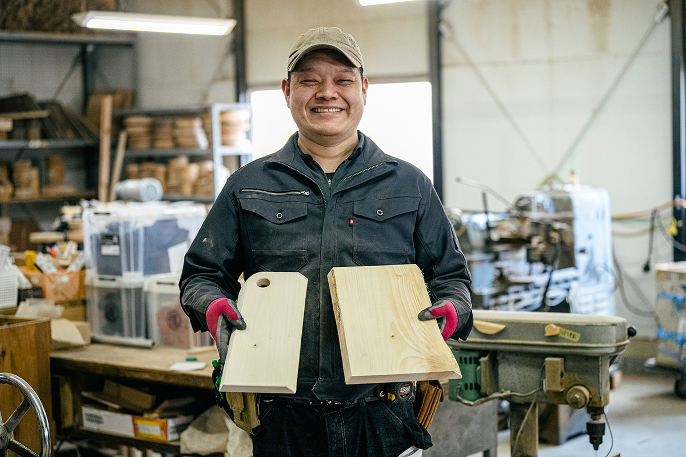
В горах Уэно растут вперемешку самые разные широколиственные деревья, и так же по-разному работают здешние мастера. Вещи у всех свои, но объединяет их отношение к дереву: использовать доставшийся материал до конца, найти дело даже обрезкам и дать дереву прожить свою жизнь полностью. Изделия кооператива и мастеров деревни продаются в магазине «Вудди Уэномура мэйбоку когэйкан» у придорожной станции «Мити-но эки Уэно» на шоссе № 299.
«Вудди Уэномура мэйбоку когэйкан»
- Адрес
- префектура Гумма, уезд Тано, деревня Уэно, Кацуяма, 127
- Часы работы
- 9:00–17:00 (март–ноябрь), 9:00–16:30 (декабрь–февраль)
- Выходные
- среда с декабря по февраль, новогодние праздники
- Сайт
- ueno-shinrin.org
Фото: Ацуси Ямахира.